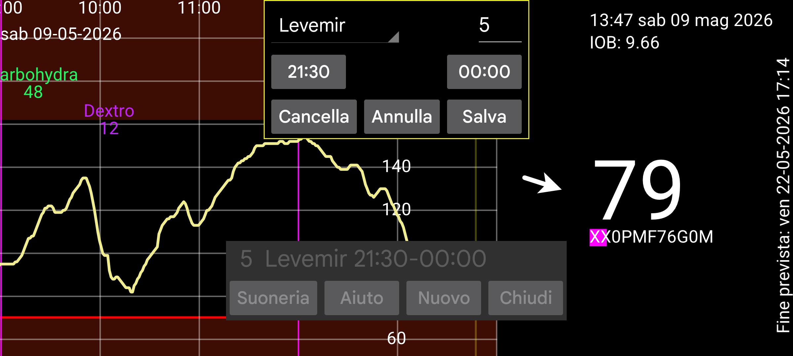

I promemoria ti ricordano se non hai inserito un certo valore entro un determinato intervallo di tempo.
Premendo NUOVO puoi aggiungere un nuovo promemoria.
Specifica l'orario di inizio e fine del periodo di tempo, entro il quale dovresti inserire il valore specificato sotto l'etichetta specificata.
Quando viene raggiunto l'orario di fine, il programma controlla se hai inserito almeno questo valore, sotto l'etichetta specificata, dall'orario di inizio. Se non hai registrato, viene mostrata una notifica e riprodotta una suoneria.
Ad esempio se specifichi:
Levemir 6.0
21:30 - 23:55
Riceverai un promemoria dopo le 23:55 se non hai specificato almeno 6 unità di Levemir dopo le 21:30 dello stesso giorno.
I promemoria già specificati sono mostrati in una lista. Tocca per modificare.
Se tutto va bene, i promemoria funzionano anche dopo il riavvio di Android senza che l'utente debba avviare Juggluco.
Su alcuni dispositivi Huawei, devi specificare che consenti l'avvio di un programma all'avvio. Questo si fa in Impostazioni Android -> Batteria -> Avvio app. Qui selezioni Gestito manualmente per Juggluco in modo che Avvio automatico ed Esegui in background siano attivi. Questo è necessario anche perché gli allarmi di perdita di segnale funzionino dopo il riavvio senza che l'utente avvii Juggluco.